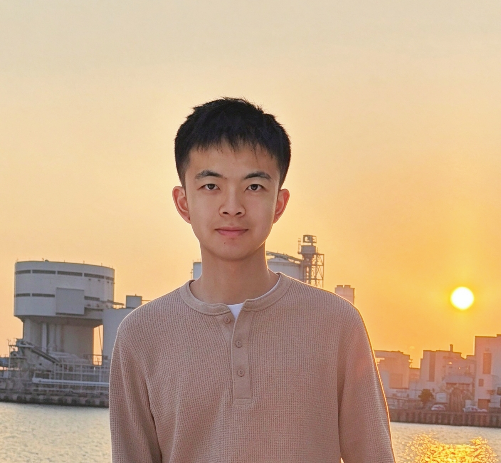

Learning mechanisms
What mechanisms do learners bring to analyze and interpret their input?
Language Acquisition, Processing, & Modeling
I'm Jack (Yuanfan) Ying, a postdoctoral fellow at the Brain and Mind Institute and Department of Linguistics and Modern Languages at the Chinese University of Hong Kong. I received my PhD in Linguistics from the University of Maryland, College Park, advised by Jeffrey Lidz and Alexander Williams, and also worked with Valentine Hacquard and Kate Mooney.
My work sits at the intersection of language development and language processing. I use corpus, experimental, and computational methods to understand how language learning happens and evolves, with interests spanning syntax, semantics, pragmatics, phonetics, and phonology/tonology. I am particularly interested in connecting behavioral evidence and linguistic theory with computational experiments—including with large language models—to understand what makes human learning different from machine learning.
What mechanisms do learners bring to analyze and interpret their input?
What methods can we use to probe learners' linguistic knowledge given their fragility in performance?
What do cross-linguistic data tell us about linguistic theories?

(Under)estimating preschoolers' knowledge in the acquisition of the